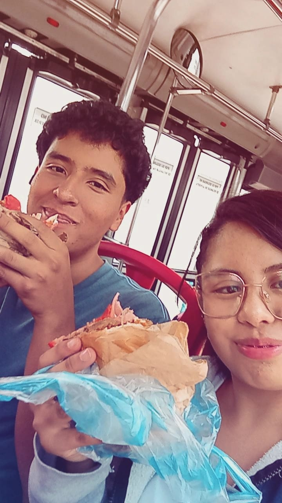
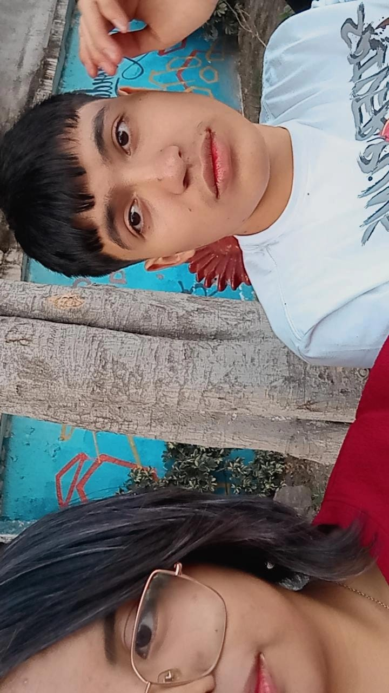

Mis amigos: Víctor y Francisco:
Aunque no nos veamos todos los días, siempre tengo claro que están ahí.
La vida muchas veces nos lleva por caminos distintos, con agendas llenas y
momentos que no siempre coinciden, pero eso nunca ha sido un obstáculo para
nuestra amistad. Porque sé que, cuando lo necesito, puedo contar ellos sin dudarlo.
Tienen ese don de distraerme, de sacarme una sonrisa incluso cuando no lo digo,
de hacer que las cosas pesen menos solo con su compañía, aunque sea a distancia.
Me hacen sentir acompañada sin tener que estar presente físicamente, y eso vale muchísimo.
Gracias por ser esas personas que no necesitan estar todos los días para hacerse sentir.
Tenerlos en mi vida es una de esas cosas que valoro en silencio, pero profundamente.

Victor

Francisco